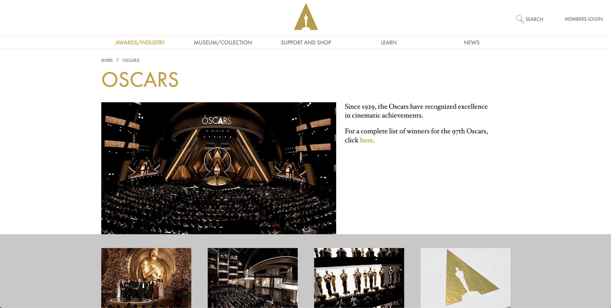
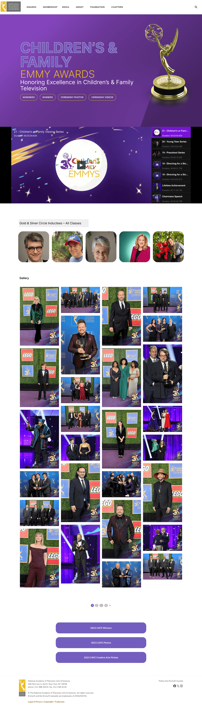

02 / FREELANCE · WEBSITE REDESIGN
The Emmys
Client work as a freelance designer at a small studio subcontracted for the Emmys website.
One structure for many award categories.
A modular website redesign that helps visitors find awards, nominees and winners across categories.
Visit the official Emmys website ↗
THE BRIEF / 60-SECOND OVERVIEW
One structure for many award categories.
The problem
Every award category had its own page format. The client didn’t want each page to feel individually designed; they wanted every award page to share one layout. For visitors, the mix meant relearning where to look each time they changed categories, and long blocks of text made key information hard to scan.
What I did
I did the early research, comparing how three other awards sites handle hierarchy and year-based browsing. Then I designed a modular category template within the Emmys’ existing design system and redesigned every category page with it. The template was approved and launched.
01 / DISCOVERY
Find the structure beneath the visual differences
I reviewed the award categories alongside three other award websites. The Oscars offered strong hierarchy and a coherent visual identity. The Golden Globes used rich imagery but relied heavily on text. The Tony Awards made year-based browsing easy. These comparisons helped me separate what visitors need from how an awards brand is styled.



02 / INFORMATION ARCHITECTURE
Build a repeatable category experience
I built the information architecture and wireframes around a shared template, so what a visitor learns on one category page carries over to the next. Recurring information gets a consistent home, and each category’s own content fits around it.

03 / DESIGN DECISION
Standardize the navigation, allow the content to vary
The client wanted sameness, but categories don’t have the same amount of content. The template had to hold a common hierarchy while letting sections flex. That made it a content-management decision as well as a visual one: editors get a repeatable structure for future updates.
The Emmys already had a design system, with set type sizes and colors, so I designed within it. The work was about structure and hierarchy, not a new visual identity.
04 / SOLUTION
From dense pages to a shared visual hierarchy
Every category page was redesigned on the same template. Compare an original page with its redesign below. The focus is how visitors scan the information, recognize sections and keep browsing.


05 / FEEDBACK & LAUNCH
The client’s early push for consistency shaped the template
The client’s early feedback was that pages felt too individual, which is why a single template became the answer. Once the template was approved it was released, and the redesigned site is live. The later phases of the project were design work and ongoing updates.
06 / REFLECTION
Evaluate the template across categories
Client feedback after the template was approved was limited, and no quantitative results are documented. The evaluation I’d run next would ask visitors to find an award winner in two different categories, and ask editors to update both pages. That would show whether the shared structure improves navigation and publishing in practice.